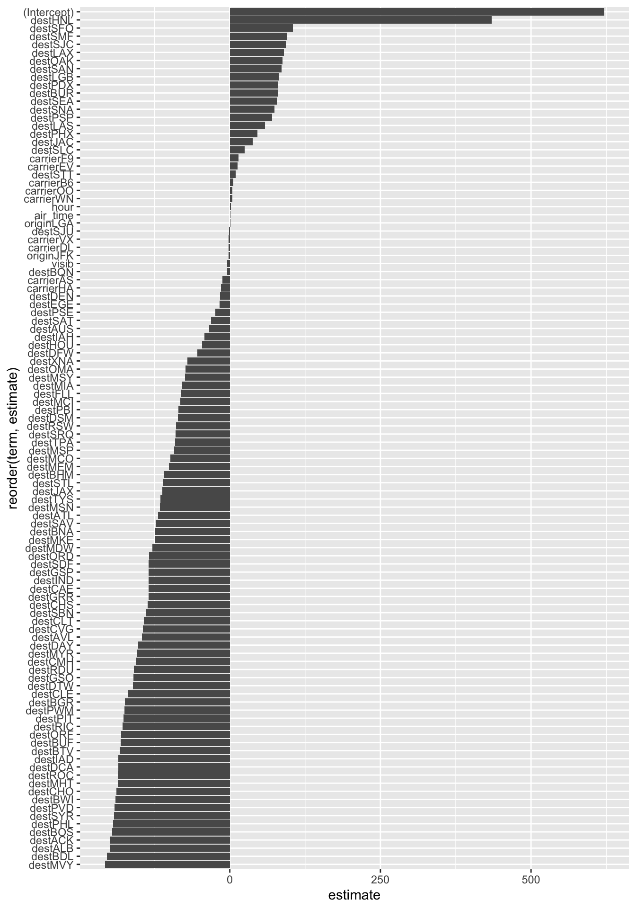
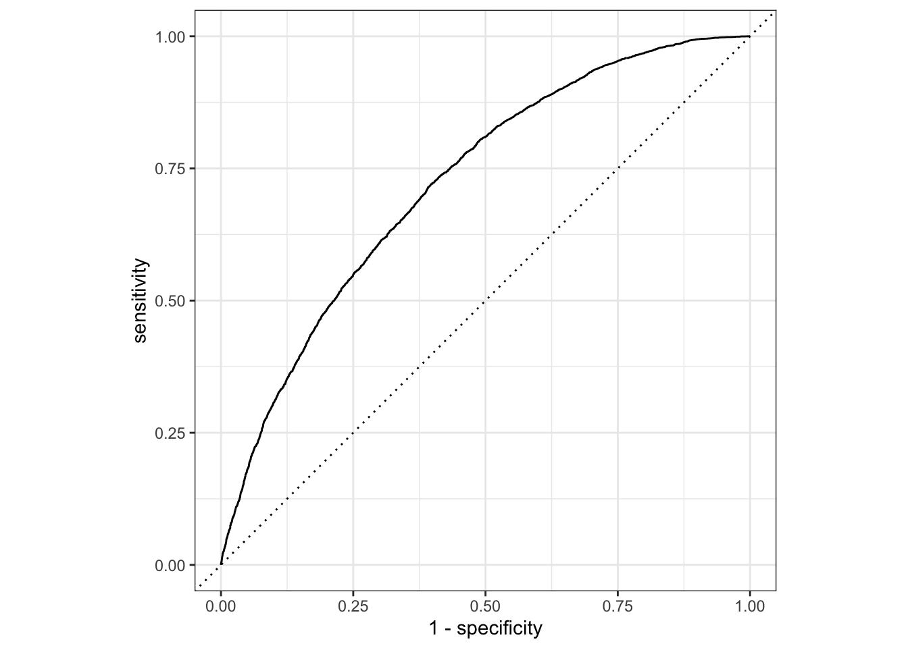
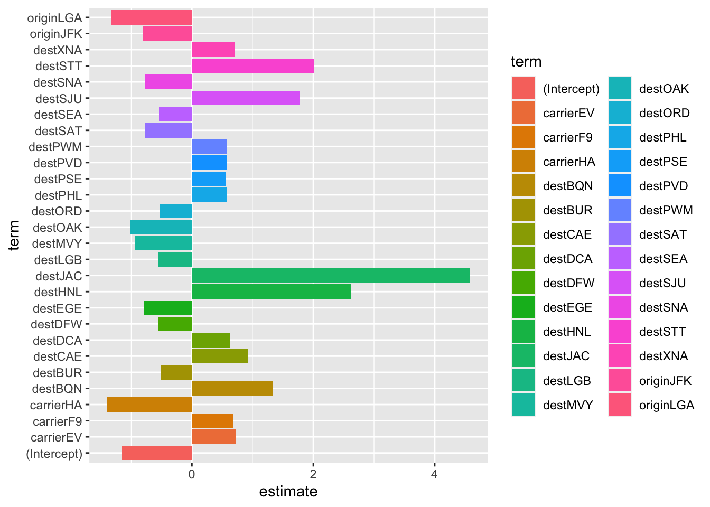

library(tidyverse)## ── Attaching core tidyverse packages ──────────────────────── tidyverse 2.0.0 ──
## ✔ dplyr 1.1.3 ✔ readr 2.1.4
## ✔ forcats 1.0.0 ✔ stringr 1.5.0
## ✔ ggplot2 3.4.4 ✔ tibble 3.2.1
## ✔ lubridate 1.9.3 ✔ tidyr 1.3.0
## ✔ purrr 1.0.2
## ── Conflicts ────────────────────────────────────────── tidyverse_conflicts() ──
## ✖ dplyr::filter() masks stats::filter()
## ✖ dplyr::lag() masks stats::lag()
## ℹ Use the conflicted package (<http://conflicted.r-lib.org/>) to force all conflicts to become errorslibrary(tidymodels)## ── Attaching packages ────────────────────────────────────── tidymodels 1.1.1 ──
## ✔ broom 1.0.5 ✔ rsample 1.2.0
## ✔ dials 1.2.0 ✔ tune 1.1.2
## ✔ infer 1.0.5 ✔ workflows 1.1.3
## ✔ modeldata 1.2.0 ✔ workflowsets 1.0.1
## ✔ parsnip 1.1.1 ✔ yardstick 1.2.0
## ✔ recipes 1.0.8
## ── Conflicts ───────────────────────────────────────── tidymodels_conflicts() ──
## ✖ scales::discard() masks purrr::discard()
## ✖ dplyr::filter() masks stats::filter()
## ✖ recipes::fixed() masks stringr::fixed()
## ✖ dplyr::lag() masks stats::lag()
## ✖ yardstick::spec() masks readr::spec()
## ✖ recipes::step() masks stats::step()
## • Use suppressPackageStartupMessages() to eliminate package startup messageslibrary(yardstick)df_2013_raw = read_csv("data/merge_data_2013.csv", show_col_types = FALSE)## New names:
## • `` -> `...1`df_2017_raw = read_csv("data/merge_data_2017.csv", show_col_types = FALSE)## New names:
## • `` -> `...1`df_2013 = df_2013_raw |>
mutate(if_delay = if_else(arr_delay >0,1,0),
if_delay = factor(if_delay),
#carrier_bin = if_else(!(carrier %in% c('UA','EV','DL','B6')),'Others',carrier),
#month = factor(month,levels = 1:12, labels = month.abb[1:12]),
arrival_date = paste(year,"-",month,"-",day, sep = ""),
arrival_date = date(arrival_date)
) |>
filter(!(dest %in% setdiff(unique(df_2013_raw$dest),unique(df_2017_raw$dest))),
!(carrier %in% setdiff(unique(df_2013_raw$carrier),unique(df_2017_raw$carrier)))) |>
select(-tailnum,-arr_delay,
-year, -month, -day)
df_2017 = df_2017_raw |>
mutate(if_delay = if_else(arr_delay >0,1,0),
if_delay = factor(if_delay),
#carrier_bin = if_else(!(carrier %in% c('UA','EV','DL','B6')),'Others',carrier),
#month = factor(month,levels = 1:12, labels = month.abb[1:12])
arrival_date = paste(year,"-",month,"-",day, sep = ""),
arrival_date = date(arrival_date))|>
filter(!(dest %in% setdiff(unique(df_2017_raw$dest),unique(df_2013_raw$dest))),
!(carrier %in% setdiff(unique(df_2017_raw$carrier),unique(df_2013_raw$carrier)))) |>
select(-tailnum,-arr_delay,
-year, -month, -day)
# bool the target value
# bin the factor values with moderate amount of unique values
# drop some observations with too many of unique values
# there are over 100 unique values for 'dest', and each unique value accounts for around 5% or less, with a relatively even distribution,with filtering approach, we keep only the destinations that appear in both datasets and remove observations that are present in only one of the datasets.
# Convert month to factor with levels in ascending order and labels as month abbreviationsskimr::skim(df_2013)| Name | df_2013 |
| Number of rows | 57575 |
| Number of columns | 17 |
| _______________________ | |
| Column type frequency: | |
| character | 3 |
| Date | 1 |
| factor | 1 |
| numeric | 12 |
| ________________________ | |
| Group variables | None |
Variable type: character
| skim_variable | n_missing | complete_rate | min | max | empty | n_unique | whitespace |
|---|---|---|---|---|---|---|---|
| origin | 0 | 1 | 3 | 3 | 0 | 3 | 0 |
| carrier | 0 | 1 | 2 | 2 | 0 | 11 | 0 |
| dest | 0 | 1 | 3 | 3 | 0 | 92 | 0 |
Variable type: Date
| skim_variable | n_missing | complete_rate | min | max | median | n_unique |
|---|---|---|---|---|---|---|
| arrival_date | 0 | 1 | 2013-01-01 | 2013-12-30 | 2013-05-26 | 309 |
Variable type: factor
| skim_variable | n_missing | complete_rate | ordered | n_unique | top_counts |
|---|---|---|---|---|---|
| if_delay | 0 | 1 | FALSE | 2 | 0: 33603, 1: 23972 |
Variable type: numeric
| skim_variable | n_missing | complete_rate | mean | sd | p0 | p25 | p50 | p75 | p100 | hist |
|---|---|---|---|---|---|---|---|---|---|---|
| …1 | 0 | 1 | 33408.92 | 20813.33 | 1.00 | 15470.50 | 31500.00 | 50688.50 | 72733.00 | ▇▇▆▆▆ |
| hour | 0 | 1 | 13.67 | 3.88 | 5.00 | 11.00 | 14.00 | 17.00 | 23.00 | ▃▇▇▇▂ |
| flight | 0 | 1 | 1764.88 | 1630.81 | 1.00 | 495.00 | 1186.00 | 2279.00 | 6181.00 | ▇▅▁▂▁ |
| air_time | 0 | 1 | 163.71 | 94.06 | 21.00 | 104.00 | 143.00 | 204.00 | 695.00 | ▇▃▂▁▁ |
| distance | 0 | 1 | 1139.53 | 734.80 | 80.00 | 711.00 | 1008.00 | 1416.00 | 4983.00 | ▇▃▂▁▁ |
| minute | 0 | 1 | 27.37 | 19.07 | 0.00 | 10.00 | 29.00 | 45.00 | 59.00 | ▇▃▇▅▆ |
| wind_dir | 0 | 1 | 253.71 | 81.84 | 10.00 | 220.00 | 280.00 | 310.00 | 360.00 | ▂▂▂▇▇ |
| wind_speed | 0 | 1 | 16.44 | 4.89 | 4.60 | 12.66 | 16.11 | 19.56 | 39.13 | ▃▇▃▁▁ |
| wind_gust | 0 | 1 | 24.82 | 5.76 | 16.11 | 20.71 | 24.17 | 27.62 | 66.75 | ▇▅▁▁▁ |
| precip | 0 | 1 | 0.00 | 0.01 | 0.00 | 0.00 | 0.00 | 0.00 | 0.53 | ▇▁▁▁▁ |
| pressure | 0 | 1 | 1015.57 | 7.23 | 983.80 | 1010.80 | 1015.40 | 1020.40 | 1040.40 | ▁▂▇▅▁ |
| visib | 0 | 1 | 9.80 | 1.11 | 0.12 | 10.00 | 10.00 | 10.00 | 10.00 | ▁▁▁▁▇ |
skimr::skim(df_2017)| Name | df_2017 |
| Number of rows | 4617 |
| Number of columns | 17 |
| _______________________ | |
| Column type frequency: | |
| character | 3 |
| Date | 1 |
| factor | 1 |
| numeric | 12 |
| ________________________ | |
| Group variables | None |
Variable type: character
| skim_variable | n_missing | complete_rate | min | max | empty | n_unique | whitespace |
|---|---|---|---|---|---|---|---|
| origin | 0 | 1 | 3 | 3 | 0 | 3 | 0 |
| carrier | 0 | 1 | 2 | 2 | 0 | 11 | 0 |
| dest | 0 | 1 | 3 | 3 | 0 | 94 | 0 |
Variable type: Date
| skim_variable | n_missing | complete_rate | min | max | median | n_unique |
|---|---|---|---|---|---|---|
| arrival_date | 0 | 1 | 2017-01-21 | 2017-12-08 | 2017-06-19 | 28 |
Variable type: factor
| skim_variable | n_missing | complete_rate | ordered | n_unique | top_counts |
|---|---|---|---|---|---|
| if_delay | 0 | 1 | FALSE | 2 | 0: 3023, 1: 1594 |
Variable type: numeric
| skim_variable | n_missing | complete_rate | mean | sd | p0 | p25 | p50 | p75 | p100 | hist |
|---|---|---|---|---|---|---|---|---|---|---|
| …1 | 0 | 1 | 2377.12 | 1373.21 | 1.0 | 1194.00 | 2369.00 | 3557.00 | 4785.00 | ▇▇▇▇▇ |
| hour | 0 | 1 | 11.86 | 4.65 | 5.0 | 8.00 | 11.00 | 16.00 | 23.00 | ▇▆▃▅▁ |
| flight | 0 | 1 | 1716.03 | 1442.67 | 1.0 | 573.00 | 1399.00 | 2248.00 | 6834.00 | ▇▅▁▂▁ |
| air_time | 0 | 1 | 161.45 | 96.70 | 26.0 | 97.00 | 138.00 | 202.00 | 668.00 | ▇▂▂▁▁ |
| distance | 0 | 1 | 1137.83 | 757.32 | 94.0 | 618.00 | 963.00 | 1569.00 | 4983.00 | ▇▂▂▁▁ |
| minute | 0 | 1 | 25.81 | 19.51 | 0.0 | 5.00 | 29.00 | 40.00 | 59.00 | ▇▃▆▃▅ |
| wind_dir | 0 | 1 | 216.92 | 101.36 | 0.0 | 140.00 | 250.00 | 300.00 | 360.00 | ▅▂▃▇▇ |
| wind_speed | 0 | 1 | 9.66 | 4.64 | 0.0 | 5.75 | 9.21 | 11.51 | 31.07 | ▅▇▃▁▁ |
| wind_gust | 0 | 1 | 11.11 | 5.35 | 0.0 | 6.62 | 10.59 | 13.24 | 35.76 | ▅▇▃▁▁ |
| precip | 0 | 1 | 0.01 | 0.02 | 0.0 | 0.00 | 0.00 | 0.00 | 0.19 | ▇▁▁▁▁ |
| pressure | 0 | 1 | 1015.48 | 8.33 | 915.9 | 1013.40 | 1015.60 | 1017.50 | 1037.70 | ▁▁▁▂▇ |
| visib | 0 | 1 | 9.56 | 1.44 | 1.0 | 10.00 | 10.00 | 10.00 | 10.00 | ▁▁▁▁▇ |
val_set <- validation_split(df_2013,
strata = if_delay,
prop = 0.80)## Warning: `validation_split()` was deprecated in rsample 1.2.0.
## ℹ Please use `initial_validation_split()` instead.
## This warning is displayed once every 8 hours.
## Call `lifecycle::last_lifecycle_warnings()` to see where this warning was
## generated.lr_mod <-
logistic_reg(penalty = tune(), mixture = 1) %>%
set_engine("glmnet")
holidays <- c("AllSouls", "AshWednesday", "ChristmasEve", "Easter",
"ChristmasDay", "GoodFriday", "NewYearsDay", "PalmSunday")
lr_recipe <-
recipe(if_delay ~ ., data = df_2013) %>%
step_date(arrival_date) %>%
step_holiday(arrival_date, holidays = holidays) %>%
step_rm(arrival_date) %>%
step_dummy(all_nominal_predictors()) %>%
step_zv(all_predictors()) %>%
step_normalize(all_predictors())
lr_workflow <-
workflow() %>%
add_model(lr_mod) %>%
add_recipe(lr_recipe)
lr_reg_grid <- tibble(penalty = 10^seq(-4, -1, length.out = 30))
lr_reg_grid %>% top_n(-5) # lowest penalty values## Selecting by penalty## # A tibble: 5 × 1
## penalty
## <dbl>
## 1 0.0001
## 2 0.000127
## 3 0.000161
## 4 0.000204
## 5 0.000259lr_res <-
lr_workflow %>%
tune_grid(val_set,
grid = lr_reg_grid,
control = control_grid(save_pred = TRUE),
metrics = metric_set(roc_auc))
lr_plot <-
lr_res %>%
collect_metrics() %>%
ggplot(aes(x = penalty, y = mean)) +
geom_point() +
geom_line() +
ylab("Area under the ROC Curve") +
scale_x_log10(labels = scales::label_number())
lr_plot 
top_models <-
lr_res %>%
show_best("roc_auc", n = 15) %>%
arrange(penalty)
top_models## # A tibble: 15 × 7
## penalty .metric .estimator mean n std_err .config
## <dbl> <chr> <chr> <dbl> <int> <dbl> <chr>
## 1 0.0001 roc_auc binary 0.723 1 NA Preprocessor1_Model01
## 2 0.000127 roc_auc binary 0.723 1 NA Preprocessor1_Model02
## 3 0.000161 roc_auc binary 0.723 1 NA Preprocessor1_Model03
## 4 0.000204 roc_auc binary 0.723 1 NA Preprocessor1_Model04
## 5 0.000259 roc_auc binary 0.722 1 NA Preprocessor1_Model05
## 6 0.000329 roc_auc binary 0.722 1 NA Preprocessor1_Model06
## 7 0.000418 roc_auc binary 0.722 1 NA Preprocessor1_Model07
## 8 0.000530 roc_auc binary 0.722 1 NA Preprocessor1_Model08
## 9 0.000672 roc_auc binary 0.722 1 NA Preprocessor1_Model09
## 10 0.000853 roc_auc binary 0.722 1 NA Preprocessor1_Model10
## 11 0.00108 roc_auc binary 0.722 1 NA Preprocessor1_Model11
## 12 0.00137 roc_auc binary 0.722 1 NA Preprocessor1_Model12
## 13 0.00174 roc_auc binary 0.721 1 NA Preprocessor1_Model13
## 14 0.00221 roc_auc binary 0.720 1 NA Preprocessor1_Model14
## 15 0.00281 roc_auc binary 0.718 1 NA Preprocessor1_Model15# best paramters
lr_best <-
lr_res %>%
collect_metrics() %>%
arrange(penalty) %>%
slice(2)
lr_auc <-
lr_res %>%
collect_predictions(parameters = lr_best) %>%
roc_curve(if_delay, .pred_0) %>%
mutate(model = "Logistic Regression")
autoplot(lr_auc)
# calculate auc
lr_res %>%
collect_predictions(parameters = lr_best) %>%
roc_auc(if_delay, .pred_0)## # A tibble: 1 × 3
## .metric .estimator .estimate
## <chr> <chr> <dbl>
## 1 roc_auc binary 0.723# Fit the model using the optimal hyperparameters
log_reg_final <- logistic_reg(penalty = 0.000127, mixture = 1) %>%
set_engine("glmnet") %>%
set_mode("classification") %>%
fit(if_delay~., data = df_2013)
coeff <- tidy(log_reg_final) %>%
arrange(desc(abs(estimate))) %>%
filter(abs(estimate) > 0.5)
ggplot(coeff, aes(x = term, y = estimate, fill = term)) + geom_col() + coord_flip()